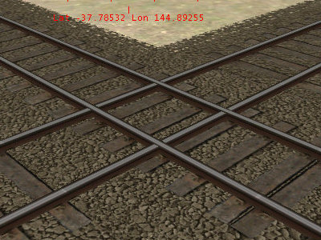
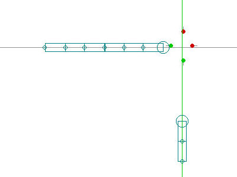
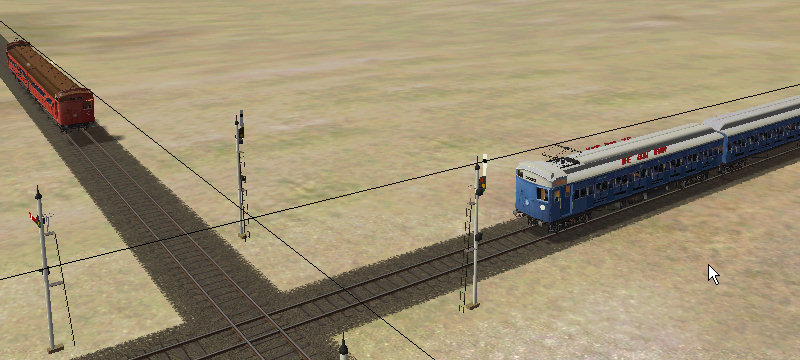
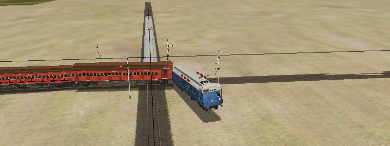

Making Signals Work on Diamond Crossings
by Vince Cockeram
Overview
Many route builders create diamond crossings by laying one track across another. This is expedient, but become problematic when users try to design activities that call for trains to cross (and possibly collide) at such a crossing.
In the following examples the blue train is the player train and the red train is the AI train.
The following images show a pair of tracks simply laid one across another.


As you can see there is no signal protection. Both signals show proceed and the AI train on the crossing track cannot "see" the player train with predictable results.


There is a solution.